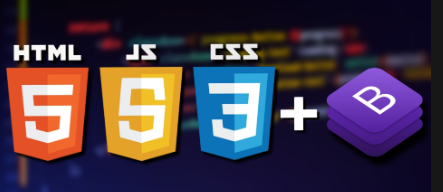

Jose Carlos de Oliveira
E-mail : josecarlos19612503@gmail.com
Telefone : (11) 96895-1412 - São Paulo Sp
Formação Superior em : Análise e desenvolvimento de sistemas
Varios Cursos extras-curriculares na área de tecnologia.
Inglês Básico , leitura e compreençâo de conteúdos.
